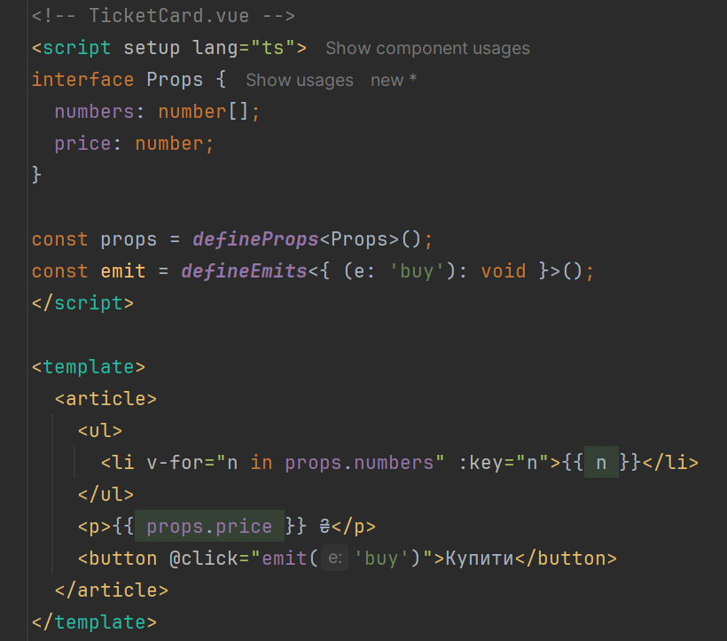
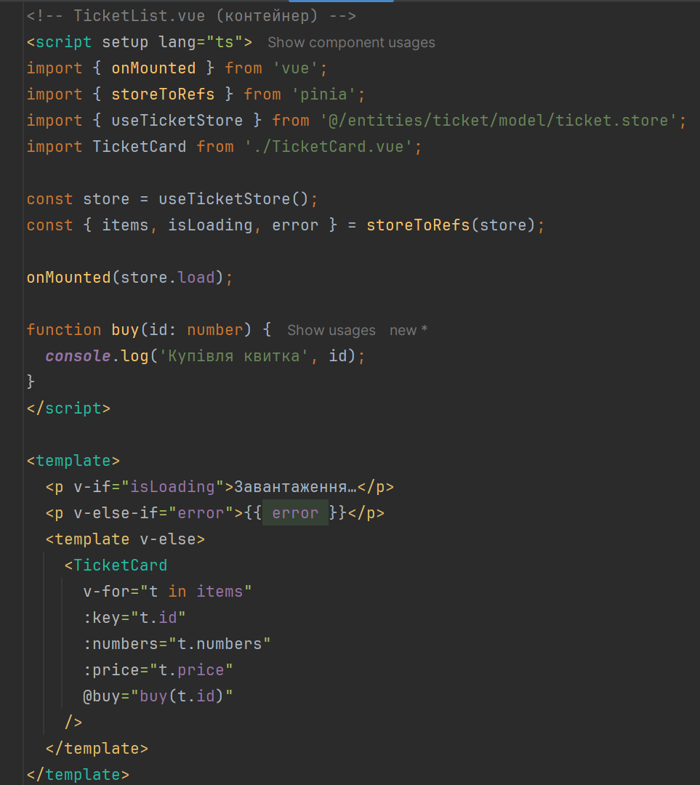
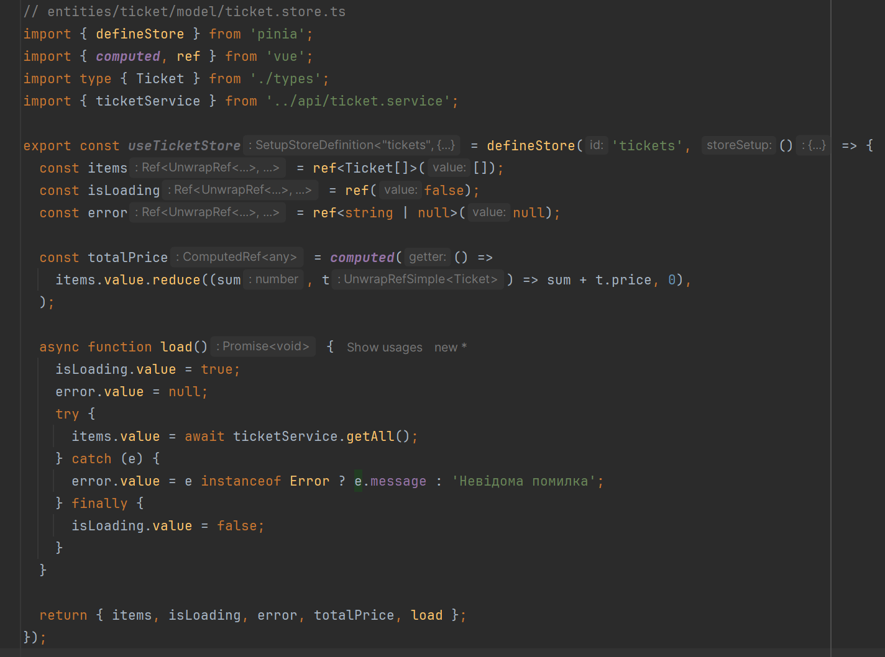
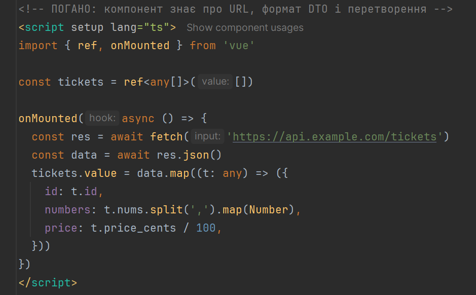
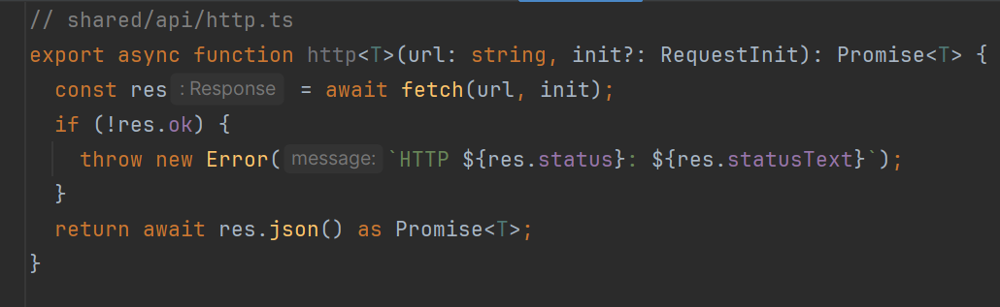
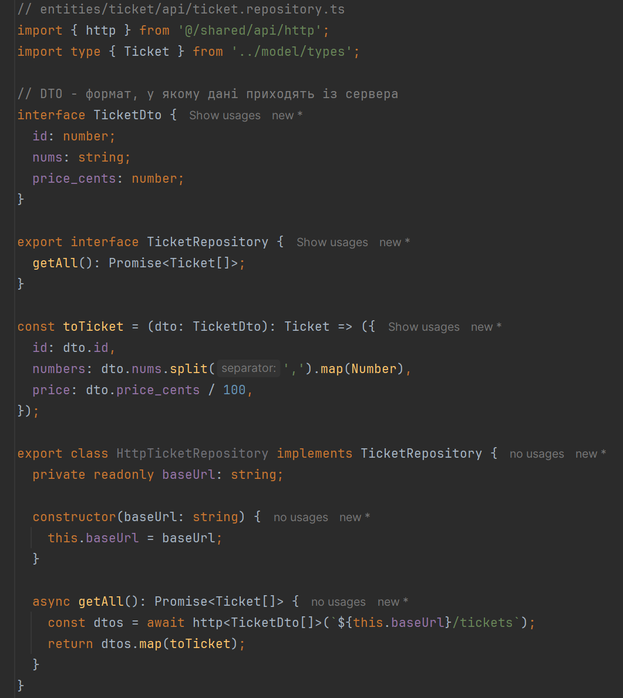
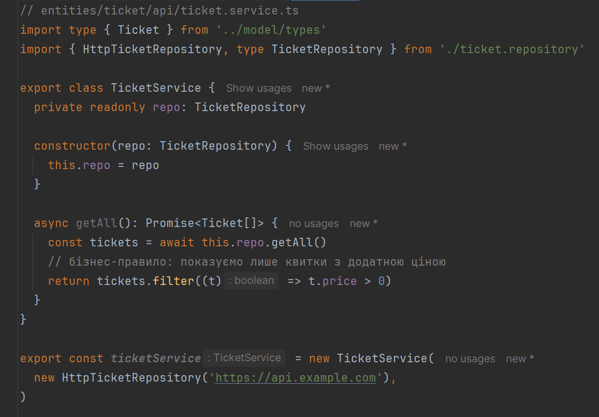
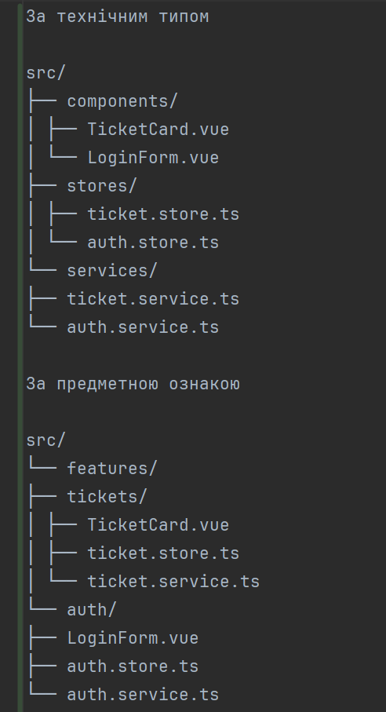
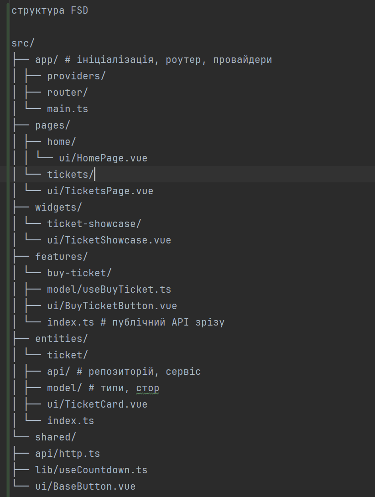

Лекція 9. Vue.js: Архітектурне проєктування клієнтських вебзастосунків - компонентна модель, шарова
організація та модульна структура
Назад до змісту лекцій
Лекція 9. Vue.js: Архітектурне проєктування клієнтських вебзастосунків - компонентна модель, шарова
організація та модульна структура
План лекції:
- Поняття архітектури фронтенд-застосунку
- Компонентна модель Vue
- Composables: повторне використання логіки
- Керування станом (Pinia)
- Шаровий поділ і патерн Repository
- Організація коду: Feature-Sliced Design
- Маршрутизація та поділ коду
- Антипатерни та підсумки
Чому «просто компонентів» недостатньо
Застосунок, який починається з кількох компонентів, з ростом функціональності перетворюється на систему, де зміна
в одному місці ламає інше.
Типові симптоми:
- «компонент-монстр» на сотні рядків, що відповідає за все одразу;
- HTTP-запити та перетворення даних безпосередньо в шаблонах і хуках компонентів;
- дублювання однакової логіки в різних частинах застосунку;
- неможливість протестувати логіку без рендерингу інтерфейсу;
- складний вхід у проєкт для нових розробників.
Що таке архітектура фронтенд-застосунку
Архітектура - це сукупність ключових рішень про поділ системи на частини, відповідальності цих частин,
напрям залежностей між ними та правила їх взаємодії. Це ті рішення, які найдорожче змінювати пізніше.
Архітектура відповідає на питання:
- з яких частин складається застосунок і за що відповідає кожна;
- де зберігається стан і хто має право його змінювати;
- хто і як звертається до зовнішніх API;
- як організовано файли та межі модулів.
Якості та принципи
Архітектурні якості, які ми прагнемо забезпечити:
- підтримуваність - зміни локалізовані;
- тестованість - логіку можна перевірити ізольовано;
- масштабованість - зростання команди й кодової бази не руйнує структуру;
- повторне використання - без копіювання коду;
- продуктивність - розмір бандла, час завантаження.
Базові принципи: розділення відповідальностей (Separation of Concerns), принцип єдиної відповідальності (SRP),
слабке зчеплення та висока зв’язність (low coupling, high cohesion), правило залежностей (залежності спрямовані
в один бік).
Рівні фронтенд-застосунку
Узагальнена шарова модель клієнтського застосунку (залежності спрямовані зверху вниз):
- Рівень представлення (UI) - компоненти, шаблони, стилі;
- Рівень стану та взаємодії - composables, стори (Pinia);
- Рівень бізнес-логіки - сервіси, доменні правила, валідація;
- Рівень доступу до даних - репозиторії, HTTP-клієнт, мапери DTO → модель;
- Інфраструктура - маршрутизація, конфігурація, збірка.
Верхній рівень знає про нижній, але не навпаки.
Компонент як одиниця архітектури
Single-File Component (SFC) у Vue об’єднує шаблон, логіку та стилі однієї відповідальності.
Контракт компонента -
це його публічний інтерфейс:
- props - вхідні дані (потік «вниз»);
- emits - події (потік «вгору»);
- slots - вставка зовнішнього вмісту;
Правило односпрямованого потоку даних: дочірній компонент не змінює props, а повідомляє батька подією.
Компонент із чітким контрактом

Типи компонентів
За відповідальністю розрізняють:
- Презентаційні (presentational, «dumb») - отримують дані через props, не знають про джерело даних,
легко перевикористовуються й тестуються;
- Контейнерні (container, «smart») - отримують дані зі стору чи composable, передають їх вниз,
обробляють події.
За рівнем у структурі: UI-kit (кнопка, поле вводу) → компонент фічі (картка квитка) → сторінка (композиція фіч
під маршрутом).
Контейнерний компонент

Composables: повторне використання логіки
Composable - функція, яка інкапсулює stateful-логіку з використанням Composition API (ref,
computed, хуки життєвого циклу) і повертає реактивний інтерфейс.
Еволюція підходів до повторного використання логіки: mixins → renderless-компоненти → composables. Mixins мають
неявні залежності та конфлікти імен, тому у Vue 3 рекомендовано composables.
Правила проєктування composables
- ім’я починається з
use (useCountdown, useTickets);
- одна відповідальність - одна функція;
- повертає
ref/computed та методи, а не «голі» значення;
- самостійно звільняє ресурси (таймери, слухачі подій);
- не залежить від конкретного компонента та DOM, якщо це не є його метою;
- параметри та результат типізовано.
Види стану в клієнтському застосунку
- Локальний стан компонента - відкрито/закрито, значення поля;
- Спільний клієнтський стан - кошик, тема, поточний користувач;
- Серверний стан - кеш даних, отриманих з API;
- Стан в URL - сторінка, фільтри, параметри маршруту;
- Стан форми - значення, помилки валідації, touched/dirty.
Кожен вид стану має свій оптимальний механізм зберігання.
Одна «глобальна змінна для всього» - типова
архітектурна помилка.
Pinia: стор як шар стану
Pinia - офіційна бібліотека керування станом для Vue. Стор містить стан (state), похідні значення
(getters) та дії (actions).
Роль стору в архітектурі - єдине джерело істини для спільного стану, точка, через яку компоненти отримують дані й
ініціюють зміни.
Стор викликає сервіс, а не fetch напряму.
Pinia: стор як шар стану

Де розміщувати стан
Правило: тримати стан якомога ближче до місця використання, а підіймати лише за потреби.
- потрібен одному компоненту -
ref у компоненті;
- потрібен гілці компонентів - підняття до спільного предка або
provide/inject;
- потрібен у різних частинах застосунку - стор Pinia;
- має відновлюватися за посиланням - параметри URL.
Проблема: запити до API в компонентах
Якщо компонент сам виконує fetch, знає формат відповіді сервера та перетворює дані, він порушує
принцип єдиної відповідальності.
- зміна формату API вимагає правок у десятках компонентів;
- логіку не можна повторно використати;
- тестування потребує мокання мережі та рендерингу;
- URL та деталі протоколу «розмазані» по застосунку.
Антипаттерн (запит у компоненті)

Шаровий підхід до роботи з даними
Ланцюжок відповідальностей:
Компонент → Стор/Composable → Сервіс → Репозиторій → HTTP-клієнт
- Компонент - відображення та обробка подій користувача;
- Стор/Composable - стан і сценарії використання;
- Сервіс - бізнес-правила, що не залежать від UI;
- Репозиторій - абстракція джерела даних;
- HTTP-клієнт - транспорт, заголовки, обробка помилок.
Патерн Repository та сервісний шар
Repository - об’єкт, який приховує деталі отримання даних (REST, GraphQL, localStorage, мок) за
інтерфейсом, схожим на колекцію. Він також перетворює DTO (Data Transfer Object формат сервера) у доменну модель
(формат застосунку).
Service - містить логіку, яка не належить ні UI, ні транспорту: фільтрація, обчислення, узгодження кількох
репозиторіїв.
HTTP-клієнт, репозиторій, сервіс

HTTP-клієнт, репозиторій, сервіс


Інверсія залежностей та тестованість
Сервіс залежить від інтерфейсу репозиторію, а не від його конкретної реалізації (принцип Dependency
Inversion).
Реалізацію підставляють ззовні.
- у Vue для цього використовують
provide/inject з типізованим InjectionKey;
- у тестах підставляють
InMemory-репозиторій без мережі;
- перехід на інший API чи бекенд не зачіпає UI та сервіси.
Організація структури: за типом чи за ознакою
- За технічним типом (
components/, stores/, services/) - простий
старт, але зміна однієї фічі зачіпає багато директорій;
- За предметною ознакою (
features/tickets/, features/auth/) - код однієї фічі
поруч, межі модулів зрозумілі.
Зі зростанням проєкту структура «за ознакою» масштабується краще.
Організація структури: за типом чи за ознакою

Feature-Sliced Design (FSD)
FSD - методологія організації фронтенд-коду за шарами та зрізами (slices).
Шари від найвищого до найнижчого:
- app - ініціалізація, провайдери, роутер, глобальні стилі;
- pages - сторінки застосунку;
- widgets - великі самодостатні блоки інтерфейсу;
- features - користувацькі сценарії (купити квиток, увійти);
- entities - бізнес-сутності (квиток, користувач);
- shared - універсальний код без прив’язки до домену (UI-кит, HTTP-клієнт).
Правило імпорту: модуль може імпортувати лише з шарів, розташованих нижче. Зрізи одного шару не імпортують
один одного.
Організація структури: за типом чи за ознакою

Маршрутизація як архітектурний елемент
Vue Router визначає структуру навігації та межі сторінок.
З архітектурної точки зору важливо:
- lazy loading - кожна сторінка завантажується окремим чанком (code splitting), що зменшує початковий
бандл;
- навігаційні гарди - централізована перевірка доступу;
- meta-поля маршрутів - декларативний опис вимог до сторінки;
- сторінки як композиція фіч, без бізнес-логіки в самих сторінках.
Типові антипатерни
- God component - один компонент виконує все;
- Prop drilling - передавання props через п’ять рівнів без потреби;
- Глобальний стор для всього - навіть локальний стан у Pinia;
- Мутація props та прихований обмін даними між компонентами;
- Циклічні залежності між модулями;
- Утилітарна «помийка» - папка
utils/ без меж і власників;
- Передчасна абстракція - шари заради шарів у малому застосунку.
Підсумки
- Архітектура - це поділ відповідальностей і напрям залежностей, а не вибір фреймворку.
- Компонент має чіткий контракт: props вниз, події вгору.
- Логіку виносимо в composables, спільний стан - у стори, доступ до даних - у репозиторії.
- Структуру коду організовуємо за предметною ознакою; FSD задає прозорі правила імпорту.
- Складність архітектури має відповідати складності застосунку.